SITE
MAINTENANCE
Winterschool 2024
❆
22 • 23 • 24
janvier
"Le permafrost de la Winterschool à grippé les serveurs du site de l'école... venez nous aider sous la glace a prendre soin et embellir notre bout de web."
Cet atelier sera l'occasion d'essayer de se réapproprier le site de l'erg, apprendre à s'en servir, publier dessus et réfléchir ensemble à comment l'utiliser au mieux !
Plus d'informations →
http://wiki.erg.be/w/SITE_MAINTENANCE/
Documentation | Archive | Hacking | Design | Communs | Open Source | Web 2.0 | Collaboratif | Libre | Pédagogie | Édition | Publication | Programmation


 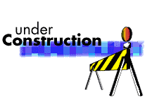
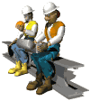
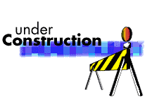
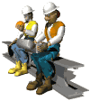


 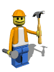
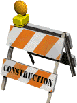
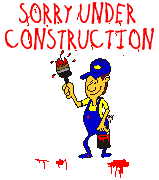
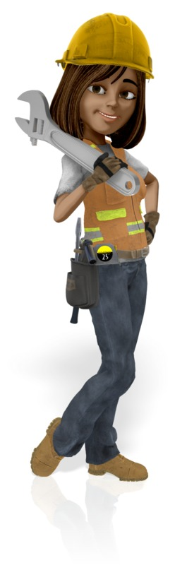
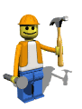
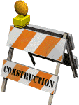
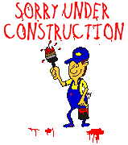
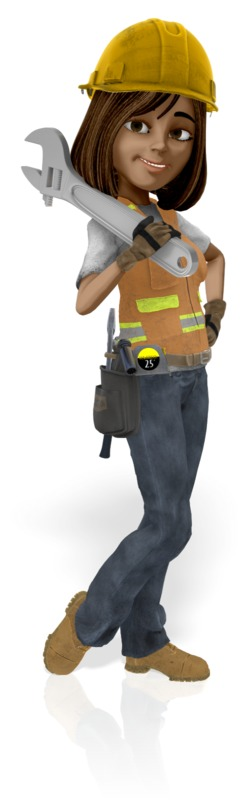
 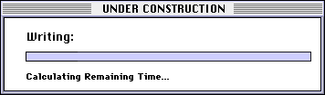
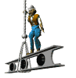
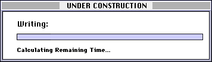
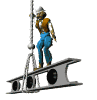